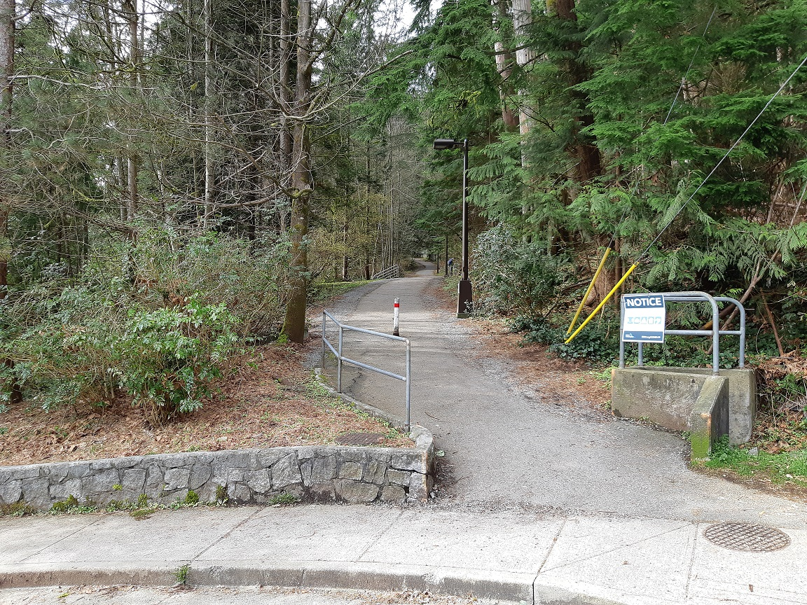
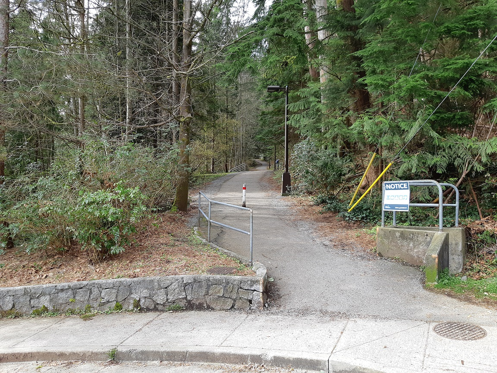
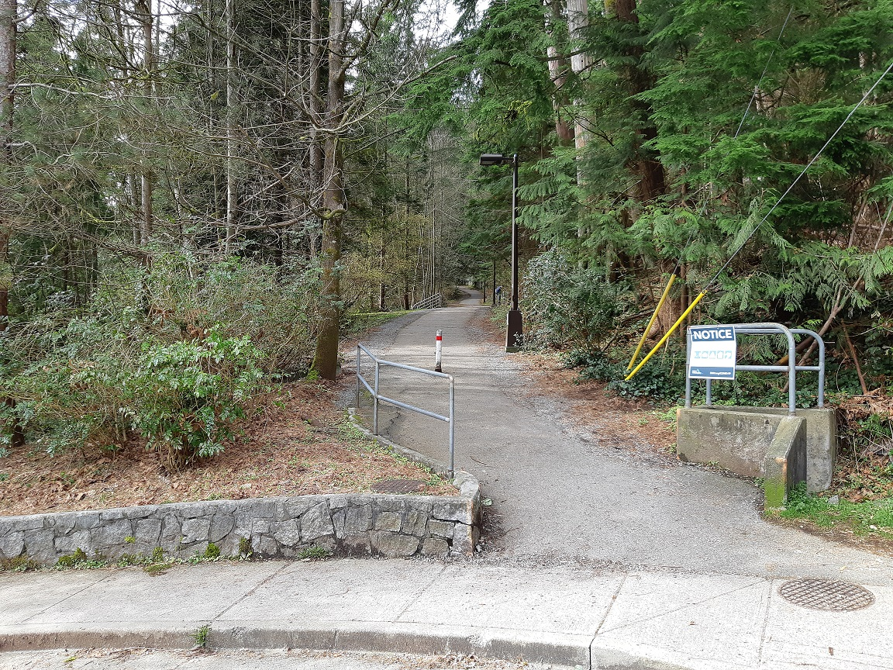

It took us around 4.5 hours, including half an hour rest at the destination, to finish this 14km trail. Pretty easy trail and we met a black bear which gave us the right of way.

It took us around 8 hours to finish this 24km trail.
Due to COVID-19, the trail head to Quarry Rock was closed. (Click the image to see bigger one)

Hope you have enjoyed this reading :-)
📈 Home | 🤝 Contact | Last Updated: 2021-04-17